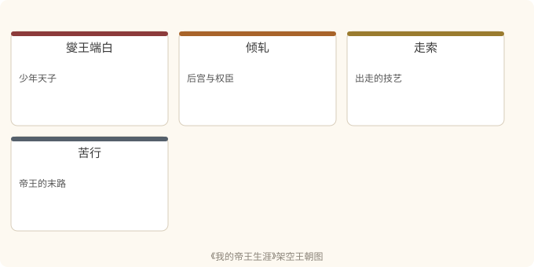

我的帝王生涯
一、基本信息
| 作者 | 苏童 |
|---|---|
| 成书/出版 | 出版年份待核（中国作家网 C015：'《米》《我的帝王生涯》《河岸》等长篇'——1992年说通说待核） 《黄雀记》：作为性格悲剧的美学建构（中国作家网）（官方文学机构） |
| 国别/地区 | 中国 |
| 时代 | 现当代 · 当代 |
| 体裁 | 长篇小说 |
| 语言 | 汉语（白话） |

《我的帝王生涯》架空王朝图（主题·结构图）
二、创作背景
中国作家网（C015）：'《米》《我的帝王生涯》《河岸》等长篇'（C015 官方口径）。
题材（通说待核）：虚构燮国少年天子端白的王位与坠落——架空历史。
三、内容脉络
少年天子端白的登基、倾轧与出走——'走索王'（通说待核）。
四、主要人物表
| 人物 | 身份 | 说明 |
|---|---|---|
| 端白 | 燮王 | 第一人称天子（通说待核） |
| 皇甫夫人 | 祖母 | 摄政（通说待核） |
五、主题与艺术特点
- 架空历史的暴政寓言（通说）。
- '走索'：权力的钢丝（通说待核）。
- 颓靡美学的极致（通说）。
六、影响与评论
- 中国作家网：列入苏童长篇代表作（C015）。
《黄雀记》：作为性格悲剧的美学建构（中国作家网）（官方文学机构） - 先锋小说的历史架空转向（通说待核）。
《黄雀记》：作为性格悲剧的美学建构（中国作家网）（官方文学机构）
七、阅读建议
难点
- 架空王朝的自造词汇。
- 颓靡修辞。
- 《我的帝王生涯》（人民文学出版社/花城出版社版本，通说待核）。
先《米》后本作。
八、待核实
- 1992年出版（花城出版社说）核对。
- 端白人名与燮国设定核对。
- '走索王'情节待核。
本页主要来源
苏童的其他收录作品：黄雀记